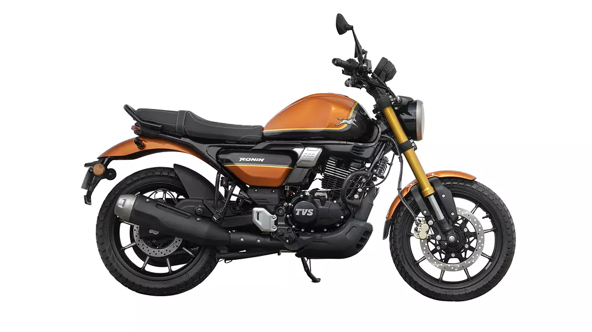

TVS Ronnin 225
₹ 1,50,000
TVS Company is introducing a new Bike in 2023 which is TVS-Ronin-225. You can select the color of your bike which you want. The Ronin is a new modern retro motorcycle from TVS. This motorcycle is a bit inspired from the Zeppelin cruiser concept but has been altered to make it more relevant to the current taste. The combination of retro styling, modern tech and 225c engine makes it quite enticing.Mileage: The Real Mileage of TVS Ronnin 225 is 42kmpl.
Perchase Now More